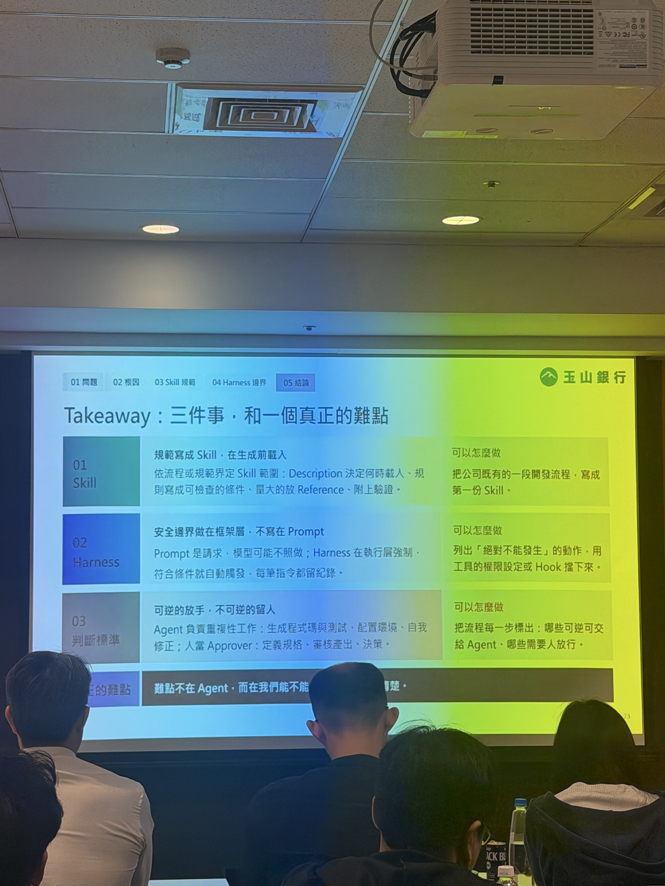

PART 2 / COURSE REVIEW · 10/14 14:15–15:00 · 張云姵 Sarah
懂行規的 Agent：把規範變成技能，自動化開發到部署
Skill 與 Harness 的執行邊界
講師：張云姵（Sarah）
講師經驗：玉山銀行智能金融處雲端技術架構師，具 GCP 架構、金融跨機構協作與 AI Agent 工作流程平台的架構及部署自動化經驗。
Agent Compliance workshop · original images
